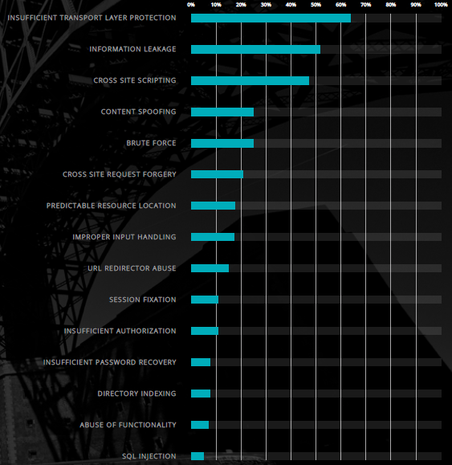

"Sleepy Puppy" XSS Payload Management Framework
Temu rezervirao: Matija Čoklica
Sadržaj |
Uvod u temu
U izgradnji web aplikacija, razvojni inženjer uz poštivanje (ne)funkcionalnih zahtjeva koje stvara kupac te aplikacije mora paziti na sigurnosne mjere vezane uz trenutnu tehnologiju s kojom stvara web aplikaciju te spriječiti da se što manje napada na web aplikaciju (sa obaju strana – klijentske i serverske) ne dogodi. Kompanija WhiteHat Security koja se bavi sigurnošću web aplikacija, objavila je statistička izvješća za 2016. vezana uz sigurnost web aplikacija. Izvješće koje govori o vjerojatnošću ranjivosti web aplikacije, izgleda ovako:
 Slika 1:"Vulnerability Likehood By Class" izvještaj. Izvor
{kind=link}
Ranjivosti su poredane prema klasama, zbog različitih atributa između ranjivosti/napada. Svoje mjesto među prvih tri, našao se i „cross site scripting“ (XSS). Takav napad čest je i poprilično lako izvediv („trik“ napada je zapravo u nanošenju i kvaliteti štete), stoga mu je potrebno posvetiti pažnju. Uz razne preventivne metode, poželjno je imati alat ili sučelje koje se bazira na otkrivanju XSS napada.
Cross Site Scripting
Budući da se popriličan broj web stranica referencira na OWASP-ovu definiciju „cross-site scripting“-a (u nastavku XSS), prije nego što krenemo na samu temu, obraditi ću pojam XSS-a.
XSS napad pripada „injection“ tipu napada, u kojem je zlonamjerna skripta (ili više njih) umetnuta na web mjesto kojemu, pretpostavlja se, korisnik vjeruje. Napad se događa kada napadač koristi web aplikaciju kako bi poslao zlonamjernu skriptu (koju web preglednik zna čitati i interpretirati) drugim krajnjim korisnicima web aplikacije. Uočavamo da svrha XSS napada nije napast stranicu, već kroz „phishing“ i eksploataciju ovjeravanja podataka na obje strane (klijentske i serverske), napasti krajnjeg korisnika. Naravno, umetanjem zle skripte na „trusted“ stranicu , korisnički web preglednik ne zna da je skripta zlonamjerna, te će ju (najčešće) bez upozorenja korisnika izvršiti. Što je najgore, web preglednik će takvim stranicama omogućiti pristup kolačićima, sesijama, te ostalim osjetljivim informacija kojima web preglednik može pristupiti.
Okidanje XSS napada se događa kada se prvo: podaci unose u web aplikaciju kroz nepovjerljiv izvor što je najčešće sam web zahtjev (prisjetimo se da kod GET metoda unutar „query string“-a možemo pisati HTML oznake, a samim time i javascript kod). Zatim: podaci se nalaze u dinamičkom sadržaju (HTML stranici) koji je poslan korisniku. Ako je web aplikacija ranjiva, tj. ako ne provjerava i ispravlja onaj dio „input“-a kroz koji je izvršen napad – napad XSS-om je uspio.
Zlonamjeran sadržaj koji je poslan u web preglednik korisniku najčešće izgleda kao segment javascript koda, te može sadržavati HTML oznake, Flash ili bilo koja druga vrsta programskog koda koju web preglednik može izvršiti. Broj različitih napada temeljenih na XSS-u je velik, no kao što je i prije rečeno temelj dobrog XSS napada je izrada skripti koje će zadovoljiti želju napadača, a nakon toga može isprobati sve „napadačke“ vektore, u nadi da će jedan i uspjeti obaviti svoj posao. Najčešće je to prijenos privatnih korisničkih podataka prema napadaču, preusmjeravanje korisnika na web sadržaj po želji i kontroli napadača, pa čak i napraviti neke zlonamjerne radnje nad korisničkim računalom (otvaranje zaraženog PDF dokumenta preko UXSS napada, u pregledniku, na Windows platformama).
Tri su glavna tipa XSS napada. Neće biti sva tri opisana u detalje, već će se tokom daljnje razrade projekta razmatrati samo jedan tip. Reflektiran XSS je napad gdje je umetnuta zlonamjerna skripta vraćena natrag korisniku koji pokrene tu skriptu u web pregledniku, uz pretpostavku da korisnik za tu umetnutu zlonamjernu skriptu ne zna. Ovakav napad bi se mogao opisati kao „bomba u URL-u“. Naravno, klikom na zaraženi URL (koji bi napadač morao nekako zamaskirat da ne bude sumnjiv, npr. „link shortener“-om) šalje se zahtjev prema serveru te server (najčešće) vraća odgovor u obliku poruke greške, rezultata traženja, a čak je izvedivo da se odgovor korisniku ne prikaže, već se u „međukoraku“ korisniku prikaže lažna stranica koju napadač ima „host“-anu negdje, a samom korisniku izgleda kao vjerodostojna stranica. Pomoću „phishing“-a i socijalnog inženjeringa, moguće je izvesti uspješan napad. Najopćenitiji vektor napada su e-mailovi i kamuflirani linkovi u komentarima na forumima.
{kind=link}
Slika 2: Pojednostavljeni prikaz reflektiranog XSS napada. Izvor
{kind=link}
Postoji „host“-ana stranica za isprobavanje XSS napada (stranice koje se napada namjerno su ranjive) na adresi https://xss-game.appspot.com/ te odmah prva razina daje dobar primjer pisanja XSS napada.
{kind=link}
Slika 3: Prva razina xss-game. Napad, tj. kod koji je napisan u URL-u je: https://xss-game.appspot.com/level1/frame?query=<script>alert("Radim+projekt+iz+kolegija+SIS.+\nCoky")</script>
Spremljen XSS napad je onaj napad gdje napadač koristi ranjivost web aplikacije tako da može zlonamjernu skriptu spremiti na web poslužitelj, odnosno u bazu podataka (ili neko drugo generirano spremište podataka koje web aplikacija koristi). „Bomba je u bazi“ napad ne traži toliko korištenja socijalnog inženjeringa, već tehničko znanje napadača i još više sigurnosno (ne)znanje razvojnog inženjera web aplikacije. Napadač kroz HTML input element unosi zlonamjerni kod, te zakamuflira smislenim sadržajem (ovisi o situaciji: forum komentari, blog komentari…). Ako aplikacija ne filtrira oznake ili naredbe iz zlonamjerne skripte (naglasak na serversku stranu, budući da se provjera i filtriranje sa klijentske strane može vrlo lako isključiti) sadržaj se sprema u bazu. Kada drugi korisnik-žrtva otvori stranicu koja prikazuje u web pregledniku napadačev sadržaj, npr. u obliku javno dostupnog komentara, zlonamjerna skripta se izvršava u žrtvinom web pregledniku i time je napad uspješno izveden. Na slici ispod vidimo shemu spremljenog XSS napada koji krade korisničke kolačiće.
 Slika 4: Pojednostavljen prikaz spremljenog XSS napada. Izvor
Slika 4: Pojednostavljen prikaz spremljenog XSS napada. Izvor
{kind=link}
Ovakav tip napada „izgleda“ opasnije. Godine 2005. dizajniran je XSS crv nazvan „Samy“ koji je inficirao korisnike društvene mreže „MySpace“. Iako bezopasan za korisnika, dan danas je evidentiran kao najbrže razmnoživ virus ikad. Nešto noviji napad spremljenim XSS napadom izveden je 2014. na društvenoj mreži Twitter. Svaki korisnik „Twitterdeck“-a kada je vidio zaraženu objavu („tweet“) automatski je poslao istu objavu („retweet“) isto sa zlonamjernim kodom. Sadržaj te skripte bile su dvije linije jQuery koda i simbol srca izvan skripte (Taman toliko da popuni dozvoljenih 140 simbola za jednu objavu).
Slika 5: Primjer spremljenog XSS-a. Izvor
{kind=link}
Potrebno je još navesti varijantu spremljenog XSS-a, koja zapravo dosta sliči svemu što je gore opisano. No ipak, sigurnosna kuća Acunetix posebno naglašava ovu varijantu XSS-a nazvanu slijepi XSS napad. Prema njihovoj definiciji, slijepi XSS napad je takav da napadač svjesno preko ranjivog ulaznog djela web aplikacije pošalje zlonamjernu skriptu na ciljani web server, koji tu skriptu prikazuje na drugom mjestu u web aplikaciji ili čak u drugoj web aplikaciji. Naglasak na „slijepi“ XSS je zapravo na tome napadač ne zna tko i kada će netko aktivirati njegovu zlonamjernu skriptu, ali čim ju netko aktivira, napadač dobiva (npr. na svoju e-mail adresu) ciljane podatke. Također tvrtka Acunetix promovira svoj softver za skeniranje i detektiranje ranjivosti u kodu web aplikacija.
Kao zadnji i najnovije otkriven, ali nikako najmanje važan XSS napad, spominje se DOM XSS. Baziran na reflektiranom XSS napadu, no sadržan je DOM-u (Document Object Model), a ne u HTML-u. Najveća razlika između ovog i prijašnja dva XSS napada je da kod reflektiranog i spremljenog XSS napada vješt korisnik može vidjeti XSS payload, ali kod DOM XSS-a HTML izvorni kod napada i kod odgovora izvršenog napada su identični. Potrebno je istražiti DOM dobivene stranice. Popularni nazivi input-a i output-a kod ovog napada su „source“ i „sink“. Popularni „source“-ovi su naredbe poput document.URL, document.documentURI, location.href, location.search, itd. dok su „sink“-ovi document.write, (element).innerHTML, eval, setTimout / setInterval, itd. Kako bi se spriječilo što manje ovakvih napada, potrebno je upravljati DOM-om stranice na pravi način (a ne samo svu pažnju okrenuti HTML-u i Javascript-u).
Razni alati nude provjeru ranjivosti web aplikacije na XSS napade. Najpoznatiji i možda najčešće korišteni je BeEF (The Browser Exploitation Framework) koji pruža i mnoge druge mogućnosti. Na vlastitom GitHub-u je opisan kao alat, za penetracijska testiranja, koji se fokusira na otkrivanja ranjivosti unutar web preglednika. Ažuran je i može ga se naći unutar Linux Kali distribucija kao već instaliran alat. Malo manje poznat alat naziva XSS.io autora Adama Baldwina, koristi se u slučajima kada je potrebno olakšati testiranje i preispitivanje ranjivosti web aplikacije na XSS napade. Temelji se na node.js-u i Redis-u. Treći, „najsvježiji“ alat koji omogućuje organizirano i jednostavno testiranje ranjivosti XSS napada naziva se SleepyPuppy. O ovom alatu, više u nastavku.
SleepyPuppy
SleepyPuppy, prema definicija njegovog GitHub wiki-a, je framework za upravljanje XSS payload-om koji pojednostavljuje način procjene, hvatanja, upravljanja, te praćenja XSS razmnožavanja unutar duljih vremenskih perioda. Netflix-ov tehnološki blog proširuje tu definiciju, te tako navodi ključne pojmove:
Procjene (Assessments): omogućavanje specifičnih testnih sesija i dodatnih testnih opcija poput primitka e-maila (neke vrste notifikacije) kod konačnog pronalaska XSS ranjivosti, vezanih uz pojedinu procjenu.
Teret (Payloads): označava XSS stringove koji bi trebali biti izvršeni i koji bi trebali omogućiti bilo koju vrstu umetanja XSS napada.
PuppyScripts: sadržani u prijašnje opisanom teretu. Obično pisani u Javascript jeziku, no posebno su dorađeni (atribut src) kako bi omogućili povratnu vrijednost testeru u onom trenutku kada se PuppyScript aktivira (simulacija XSS napada).
Povratne vrijednosti (Captures): obuhvaćaju snimke zaslona i meta-podatke pokupljene od aktivirane PuppyScript-e
Generički kolektor (Generic Collector): krajnja točka testiranja kod ovog alata. Omogućuje bilježenje dodatnih podataka dobivenih ili generiranih temeljem povratne vrijednosti.
Daniel Miessler, glavni voditelj prakse u Hewlett-Packard sigurnosnom sektoru, te vođa OWASP Bay Area Group, oduševljen je SleepyPuppy-em, jer konačno postoji alat koji omogućava sigurnosnim inženjerima ciljan i jednostavan rad za XSS ranjivošću, i to pomoću XSS tereta koji se može pratiti, ali i mogućnošću notifikacije kod okidanja XSS napada čak mjesecima nakon umetanja Puppyscript-a. Citat sa njegovog službenog bloga, gdje je dao osvrt na alat, kaže sljedeće: „…They basically have a tool that creates trackable XSS payloads and then listens for evidence that they’ve been detonated somewhere within a target environment. They work at Netflix, so they started the project to protect their own org… The tool is really more about “delayed” XSS, and, more importantly, about having a framework that can handle the receipt of delayed payloads and then know which campaign they were associated with.“
Alat je u svojim prvim inačicama bio pušen pod nazivom „OWASP Beta“ (GitHub repo) , te su na njemu radili razvojni inženjeri Scott Behrens (GitHub acc, Twitter acc) i Patrick Kelley (GitHub acc, Twitter acc). Ova inačica je napuštena i zamijenjena novom „Netflix OSS“ inačicom (GitHub repo) te ova inačica, skupa sa alatima FIDO, Dirty Laundry, Scumblr, Sketchy i Workflowable, u vlasništvu je tvrtke Netflix, no svaki od ovih alata je ujedno i open-source. Također, SleepyPuppy nudi ostalim razvojnim inženjerima API kako bi sudjelovali u nadogradnji ovog alata, razvijanjem dodataka za skenere ranjivosti poput Burp-a ili Zap-a.
SleepyPuppy je jedan u nizu alata za testiranje XSS ranjivosti, ali svoju specifičnost može zahvaliti modificiranim skriptama, koje krajnji korisnik ovog alata može sam raditi. Kao što je rečeno, radi se o XSS payload-u koji okida povratnu rutinu (callback) prema SleepyPuppy aplikaciji. Upravo to omogućuje praćenje gdje i kada payload bude okinuti, stoga tesitranje može biti ispravno provedeno od strane drugog korisnika/testera, zatim od strane iste ili neke druge aplikacije koja tu Puppyscriptu pokrene, i sve to gotovo bez „roka trajanja“ (povratna rutina može biti okinuta i nakon nekoliko mjeseci od puštanja spremljenog XSS napada preko Puppyscripte). Opet, tako nešto je izvedivo zbog mogućnosti slanja povratnih informacija testeru na dogovorenu e-mail adresu. Zato Daniel Miessler voli nazvati ovaj alat savršenim za „Delayed XSS“ testiranje (Acunetix poistovjećuje termin „Delayed XSS“ sa terminom slijepog XSS-a).
Alat testeru daje određen broj XSS payload-ova, Puppyscritpa i kolektora. Payload-i su zapravo XSS stringovi u kojima se nalazi Puppyscript (kao što je rečeno, uglavnom Javascript kod). Puppyscripte definiraju način sakupljanja informacija o napadnutom krajnjem korisniku, s mogućnošću prikupljanja dodatnih informacija o stanju web aplikacije u trenutku napada. Svaka stavka prikupljanja povratnih informacija može se konfigurirati, a također i izrađivati vlastite Puppyscripte. Alatom zadane Puppyscripte mogu prikupit i generirat snimku zaslona web aplikacije u trenutku napada, meta-podatke poput URL-a, cijelog DOM-a sa payload isticanjem, user-agent informacije, zaglavlje preporuka, pa čak i kolačiće napadnutog korisnika. Omogućeno je i kategoriziranje napravljenih XSS payload-ova.
SleepyPuppy alat napravljen je od sljedećih komponenti:
- Python 2.7 with Flask (uz nekoliko helper paketa)
- SQLAlchemy sa konfigurabilnim backend skaldištem podataka
- Ace Javascript editor za stvaranje i uređivanje PuppyScripts
- Html2Canvas JavaScript za screenshot-ove
- Opcionalno: AWS Simple Email Service (SES) za e-mail notifikacije i S3 for screenshot skladište.
- SleepyPuppy dolazi zajedno sa već nekoliko generiranih XSS payload-ova, Puppyscripta i standardno ugrađenih procjena.
Primjer scenarija Delayed XSS-a
Na slici ispod možemo promotriti scenarij gdje tester XSS ranjivosti, preko određenog input polja na stranici umeće svoju zlonamjernu skriptu u web aplikaciju. Pretpostavimo da web aplikacija , tj. server koji ju šalje korisniku, ne pokazuje XSS ranjivosti (npr. implementiran je filter kod prikaza podataka pri „vađenju“ iz baze podataka) – te tako naivni tester označi web aplikaciju sigurnom od XSS napada. No, svejedno to ne znači da napad neće uspjeti. Web aplikacija sprema podatke skupa sa testerovom zlonamjernom skriptom u bazu podataka. Korisnik (potencijalna žrtva) će preko druge web aplikacije, koja vadi podatke iz iste baze podataka, biti napadnut ako ta web aplikacija nema zaštitu od XSS napada. Pretpostavimo da se radi o nekom Log alatu implementiranom kao web aplikacija, te se moderator prijavljuje u aplikaciju i skida podatke iz baze. Moderator izvršava zlonamjernu skriptu, te tako otkriva napadaču privatne podatke (što god je definirano XSS napadom).
{kind=link}
Slika 6: Scenarij Delayed XSS napada (pretpostavili smo da tester nije dobro obavio Delayed XSS testiranje)
Koristeći odabrani XSS payload, tester šalje željeni Puppyscript na server. Scenarij je isti, no budući da tester provjerava svoj e-mail, nakon Delayed XSS napada (kada krajnji korisnik bude napadnut), tester će web aplikaciju proglasit ranjivom na XSS napad. Također, tester će znati koja je zapravo aplikacija ranjiva, te tokom koje operacije se to desilo (budući da puppyscriptova povratna rutina vraća i cijeli DOM). Dobit će i podatke o korisnikovom pregledniku, u svrhu testiranja ranjivosti specifičnih za web preglednike.
{kind=link}
Slika 7: Scenarij Delayed XSS napada, ali uz uspješno evidentiranje pomoću SleepyPuppy Puppyscripte
Instalacija i korištenje SleepyPuppy-a
Postoje dva načina postavljanja SleepyPuppy-a. Prvi (i najjednostavniji) je preko Docker-a. Jedina restrikcija je ta što se može koristiti samo u „play“ modu. Tu se koriste standardne lozinke i TLS protokol nije omogućen (povratni podaci sa stranica koje imaju omogućenu TLS zaštitu nisu mogući). Drugi način je da se SleepyPuppy može postaviti kao ozbiljno testno okruženje. Tutorial se nalazi ovdje. Za potrebe ovog projekta, koristit ćemo „play“ mod:
Prvo potrebno je instalirati Docker Toolbox i VirtualBox.
Nakon toga potrebno je sa GitHub repozitorija preuzeti sleepy puppy docker setup (git clone ili preuzeti ZIP).
Kako bismo ubrzali proces, preko programa „Docker Quickstart Terminal“ koji dolazi sa instaliranim Docker Toolbox-om, pokrečemo Docker VM. Nakon toga unutar datoteke docker-compose.yaml koju smo preuzeli zajedno sa ostatkom sleepy puppy setup-a promjenimo HOST IP parametar u IP adresu našeg Docker VM-a.
Sljedeća skripta koju je potrebno izvršiti unutar Docker terminala je: docker-compose -f /[putanja do setup-a]/docker-compose.yml build
Nakon toga pokrećemo Sleepy Puppy sa naredbom docker-compose up
Ako ne uspije prvi puta, ponoviti naredbu docker-compose up
Ako je sve u redu, potrebno je pokrenuti web preglednik i ukucati IP adresu Docker VM-a (hint: naredba docker-machine ip daje traženu IP adresu) uz port 80.
Ovakvo sučelje bi se trebalo prikazati:
{kind=link}
Login = admin
Password = password
{kind=link}
{kind=link}
{kind=link}
{kind=link}